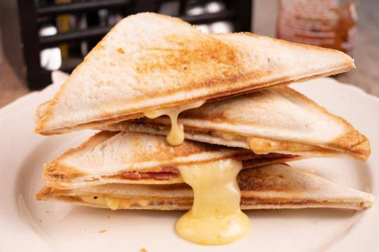

Lazy Pizza Pocket
Description
Since I'm a busy, work-from-home, mom, I tend to need super quick meals to make for my lil kiddo. This is one of them.
If you're a fan of pizza and grilled cheese, this is definitely for you! AND it only uses 4 ingredients.
Prep Time:5 minutes
Cook Time:2-6 minutes
Total Time:7-11 minutes
Serving Size:1 serving
Ingredients
- 4 slices of your choice of bread (crusts cut off)
- 1 tsp of your choice of tomato sauce or marinara
- a pinch of your choice of shredded cheese
- 3 slices of pepperoni (each slice cut in half)
Steps
- Prep 2 slices of bread with tomato sauce. Be sure to spread the sauce a bit in the center but not too far to the edges.
- Add cheese to the center of each bread slice.
- Take 3 half sliced pepperonis and arrange them in the center of each bread slice.
- Top both the bread slices with the other 2 slices of bread. Using a fork, crimp the edges so that they seal.
- Add each sandwich/pizza pocket into the toaster and toast for 2-3 minutes.
- Serve with your choice of side (my kiddo likes his with a side of chips and apple slices.)